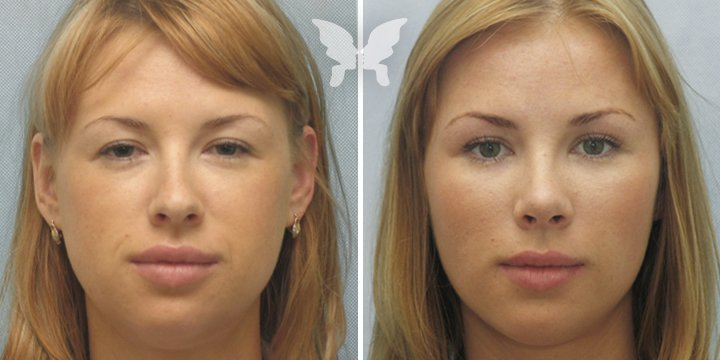
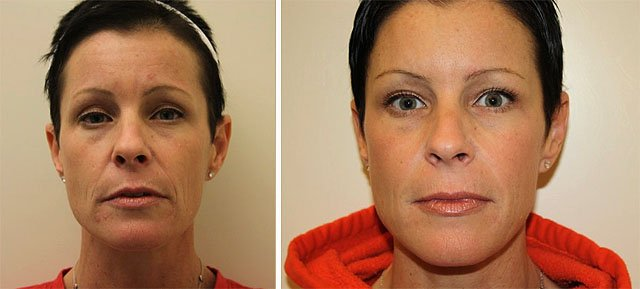

Seriāla "Klons" varones noslēpums ir atklāts! ŽADIJA pastāstīja sievietēm kā SAGLABĀT JAUNĪBU!
Pēc seriāla "Klons" parādīšanas uz ekrāniem, galvenā varone Žadija (Džovanna Antonelli) tika atzīta par vienu no planētas skaistākām sievietēm . Viņu pelnīti var dēvēt par etalonu. Savos 38 gados viņa turpina būt zvaigžņu skaistuma topa virsotnē. Un tas viss neskatoties uz to, ka Džovanna ir trīs bērnu māte un visu laiku strādā filmēšanas laukumā.
|
Kopš "Klona" ir pagājuši 13 gadi, bet Žadija izskatās tik pat jauna. |
Kā viņai izdevās nenovecot? Plastiskās operācijas un dārgas procedūras, kā tas var šķist no pirmā acu skatiena? Šodien mēs kliedēsim šo mītu un pastāstīsim Jums par to, kas palīdz aktrisei saglabāt savu izskatu nevainojami svaigu.
- Džovanna, šogad Jūs atzina par visskaistāko Brazīlijas
aktrisi. Kopš "Klona" laikiem jūs ne pavisam nekļuvat vecāka! Kā Jums izdevās
saglabāt savu jaunību?
- Ticiet man: aktrises karjera nozīmē nemitīgu stressu, steigu un miega trūkumu. Tāpēc nekādi, pat visdārgākie līdzekļi nespēs palīdzēt Jums tikt vaļā no noguruma atstātajām pēdēm un pirmajām novecošanas pazīmēm.
Mans ikdienas grafiks ir ļoti saspringts, nemitīgais darba filmēšanas laukumā, fotosesijas un vēl daudz kas cits. Man paliek pavisam nedaudz laika, kuru varu veltīt sev un sava izskata kopšanai. Teikšu godīgi, ka tie daudzi krēmi, sejas toniki un skrubji liek man nodrebēt. Tāda daudzveidība. Lai izmantotu to visu man būs nepieciešama bezmaz viena vai pat pāris stundas pie spoguļa! Un man vēl nav nekādu garantiju, ka visi šie līdzekļi izrādīsies efektīvi.
Ir labi, ka esmu atradusi sev vienu vienīgo līdzekli, kurš darbojās labāk par visu šo veikalā pirkto kosmētiku. Un rezultāts acīmredzams, kā jūs paši varat to novērot.

Žadijas skaistumu kopj un sargā |
- Lūdzu, pastāstiet par to vairāk.
- "Klona" filmēšanas laikā mēs atradamies gandrīz ekstremālos apstākļos. Filmēšana notika tuksnesī, nepanesamā karstumā, tur visapkārt sauss gaiss. Mēs pavadījām filmēšanas laukumā 13-14 stundas pēc kārtas. Vai varat iedomāties, kas notika ar manu ādu? Sausums, mitruma trūkums - tas viss ietekmēja manu ādu ārkārtīgi negatīvi.
Tikai dažu mēnešu laikā man parādījās spēcīgi izteiktas grumbas un pigmentācija, noslēpt kuru man bija arvien un arvien grūtāk. Es sapratu, ka ja nerīkošos tūlīt - rezultātā es nespēšu atgūt atpakaļ savu skaistumu.
Es sāku interesēties ar vietējiem tautas līdzekļiem un receptēm, daudz runāju ar vietējiem iedzīvotājiem. Viņiem nav tādas kosmētikso līdzekļu izvēles pārpilnības kā Rietumvalstīs ir pieraduši, bet tajā pat laikā viņiem sievietes, pat tās, kurām ir aiz 50 gadiem, izskatās ļoti jaunas.
Kā izrādījās, viņu vidū ir ārkārtīgi populāra dabīgās izcelsmes kosmētika. Protams, mūsdienās neviens vairs nevāra kosmētiku mājās pats, no zālītē, bet izvēloties sev kopšanas līdzekļus sievietes pievērš īpašu uzmanību to sastāvam. Viens no populārākajiem līdzekļiem - . Tā sastāvā ietilpst tikai naturāli komponenti, nekādas liekas ķīmijas.
- Kā darbojās ?
- Tas tiek uzklāts gluži kā jebkurš cits krēms - uz no kosmētikas attīrītās sejas ādu un iemasēts ādā ar apļveida kustībām. Tas ātri iesūcas, neatstājot pēc sevis nepatīkamu lipīgu un taukainu sajūtu, kā arī nesavelk seju. Tas tik intensīvi baro un tonizē ādu, ka nekāda papildus kopšana nav nepieciešama.
Aktīvie krēma komponenti iesūcas dziļi ādas slāņos un piesātina tos ar skābekli un kolagēnu. Šūnu darbība aktivizējas, ādas šūnas sāk pakāpeniski atjaunoties - pazūd grumbas, zilumi zem acīm un pigmenta traipi, kā arī citas novecošanas pazīmes.
Pēc krēma uzklāšanas efekts ir pamanāms uzreiz - āda savelkās, samitrinās, sejas krāsa kļūst vienmērīgāka un veselīgāka . Šis efekts turpinās 24 stundas, bet ikdienas lietošanas gaitā tam ir kumulatīvs efekts, tāpēc laikam ejot Jūs pamanīsiet radikālās ādas izmaiņas - pazūd grumbiņas , uzlabojās ādas tvirtums.
|
Tikai pēc dažām lietošanas dienām iznīcina visas ādas novecošanas pazīmes. |
Kad es sāku lietot , es biju diezgan skeptiski noskaņota un neticēju tajā visā. Ka tas nesīs man kādus rezultātus. Pēc tam es sāku meklēt informāciju par šo krēmu un atradu zinātnisku rakstu , kurā viss tika detalizēti izskaidrots. Un manas šaubas tika kliedētas. Uzreiz pēc pirmās pielietošanas man atgriezās mana dabīgā spīdošā sejas krāsa! Ādu vairs nesavilka sausums, grumbas izlīdzinājās.
Mana vizāžiste pamanīja rezultātu. Šis krēms kļuvis par īstu manu glābēju! Kopš tiem laikiem es izmantoju tikai to un nekādu citu! Palīdz man saglabāt jaunību un skaistumu . No parastās veikala kosmētikas esmu atteikusies vispār.
- Domāju, ka daudzas sievietes ņems vērā jūsu padomu.
Es ļoti iesaku godži ogu krēmu visām sievietēm, kas vēlas saglabāt savu ādu jaunu un veselīgu. Pavisam nesen par šo krēmu reti kurš zināja, bet tas patiesi spēj paveikt brīnumus! Kādu laiku es pati pat biju spiesta pasūtīt šo krēmu caur draugiem.
Bet tagad gūst arvien lielāku popularitāti visas pasaules sieviešu vīdū un to iespējams bez liekām pūlēm un problēmām iegādāties tiešsaistē oficiālajā ražotāja mājas lapā. Esiet laimīgas un skaistas!


PĀRIET UZ RAŽOTĀJA OFICIĀLO MĀJAS LAPU